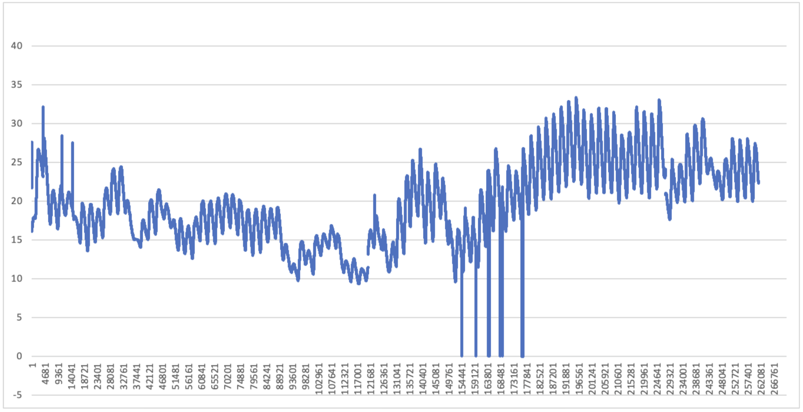
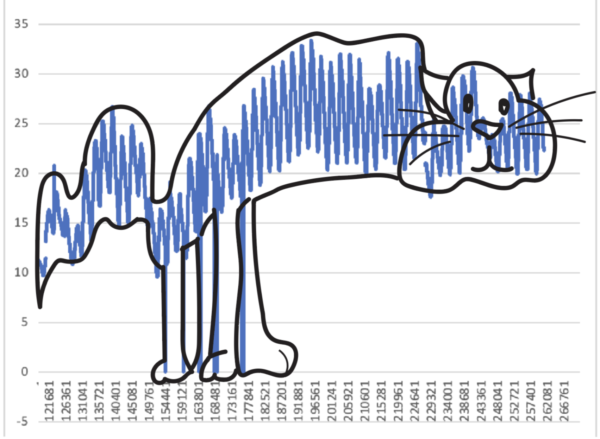
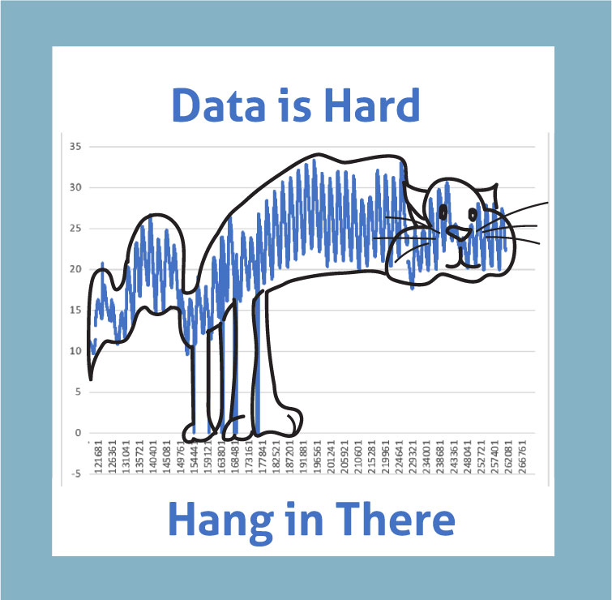

In this second line graph what I did differently was I got rid of the data that was in the middle because it was scewing the data so that I could not see what fluctuations were happening within the data.
This 3rd graph is a twist on the previous. Is it kind of funny, yes, is it irrelevant, kind of but I would not say fully irrelevant.
I made a motivational cat poster out of the data!
- Respond to the following questions:
- How do you feel about the output? I think with the time that i had it was an interesting thing to come up with. And when i say "time that I had" what I mean is that I had taken the required hours (3 hours) uninterupted and this is what I came up with in that time. So it wasn't that I was slaking off I just saw something and ran with it. Could there be more interesting ways to demonstrate the data? Absolutely but I think the way that I represented the data is interesting and possibly fitting for the project itself and here is why I think that:
The data that was collected is something I do not have a connection with. I do not fully understand the importance of the data, I did not collect the data and I don't even know what you would do with this data; what it's real intent is (what was the hypothesis?). However the only connection I have to the data is trying to download the csv file and struggling with that process because it kept just opening a new broswer tab instead of actually downloading the file from blackboard. Futhermore once I figured out how to paste the information into excel it was not put in correctly so I had to look up how to seperate it by commas which is how the file should have been sent anyway. This frustration I believe was a total mistake, I don't think this was intended to be apart of the homework process but it ended up taking an hour of my time just getting the data in a managleable way that I could actually analyze it.
So my relationship to this data is sofar and emotional one. I am frustrated by the way the data was represented and so when I actually was able to analyze the data I took it in a direction that was less frustrating to me, in a way that made me happy and engaged with the material. It also was a form of expression for the process of doing this homework assignment. The homework assignment was challenging because it could be assumed that the skills required to be successful was something that we did not focus on which is being good at excel. So because I don't have those skills it makes paring data difficult and even though it can be difficult I still have an asignment to complete. Hence, Data is hard hang in there. This statement is also a reference to the popular cat poster that states 'hang in there' with a cat hanging from a tree so I thought that cat correlation would be funny and make sense to those who get the reference.
- Did you practice any interesting skills? Anything new? What was your process? Adobe illustrator! I love that app and it will always be so useful! I used it to make the cat which was supper fun!
- What was your biggest struggle working on this? Do I think this project was a struggle or frustrating. Yes. Do I think that is a good thing? Yes. I think that if you take my explanation and understand my reasoning and see I engaged with the material in a meaningful way then I won't be frustrated. If you think that I didn't do those things then I might be frustrated because I did what i could do with the time i had and the knowledge I have of excel.
- If you were to give me feedback, based on your representation, what would you have changed about the data collection? I'm not sure, I have done alot of reflection this year and the more I find out the less I know. I have come to the conclusion that I don't think in the same way as others on assignments and so my thoughts might not be helpful if nobody likes the way I like to learn. But I'll say that I like that it is abstract.
- Anything surprising in the data? I found a cat in the data which was wild.